«تابلوه» تطبيق لمتابعة صيانة العربية: بيعرف إمتى كل قطعة عليها الدور من عداد العربية وتاريخ آخر تغيير. علشان العداد يفضل مظبوط من غير ما تكتبه كل يوم، التطبيق يقدر يحسب مسافة رحلاتك لوحده. ده اختياري، وكل صلاحية بتتطلب لما تفعّل الميزة اللي محتاجاها بس، وبعد رسالة بتشرح هي ليه.
مفيش أي بيانات صحية. صلاحية «النشاط البدني» بتقول للتطبيق بس إمتى الموبايل بقى في عربية وإمتى نزل منها. مش بنقرا خطوات ولا لياقة ولا أي بيانات عن جسمك، ومفيش حاجة منها بتتحفظ ولا بتطلع من موبايلك.
كل الصلاحيات
الصلاحية
بتتطلب إمتى
بنستخدمها في إيه
الموقع (GPS) وطول الوقت ACCESS_FINE_LOCATIONACCESS_BACKGROUND_LOCATION
لما تفعّل «تتبّع الحركة» أو «اكتشاف ببلوتوث العربية»
نحسب مسافة الرحلة وقت السواقة بس، حتى لو التطبيق مقفول. بنحفظ المسافة والوقت، مش المسار. وصفحة «الطوارئ» بتاخد مكانك وقت ما تطلبه بس.
النشاط البدني ACTIVITY_RECOGNITION
لما تفعّل «تتبّع الحركة»
نعرف إمتى الموبايل ركب عربية ماشية (فالرحلة تبدأ) وإمتى نزل منها (فتخلص). للعربيات اللي مفيهاش بلوتوث أو لو مش عايز تستخدمه.
في الآخر: «عربيتي ولا مواصلات؟». «مواصلات» بتشيل الرحلة خالص.
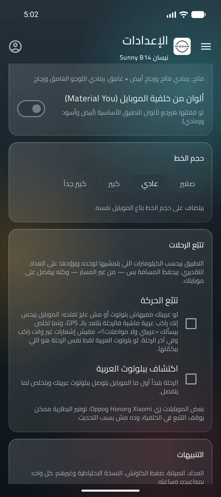
1. الإعدادات ← تتبّع الرحلات
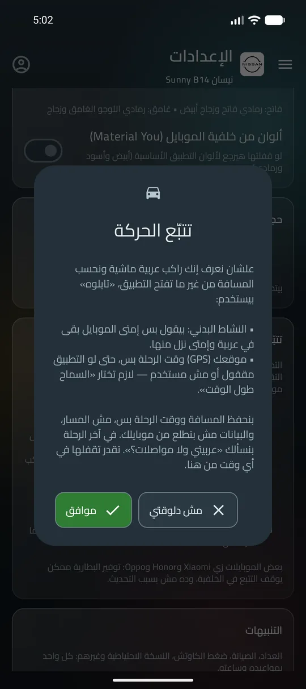
2. الشرح قبل أي طلب
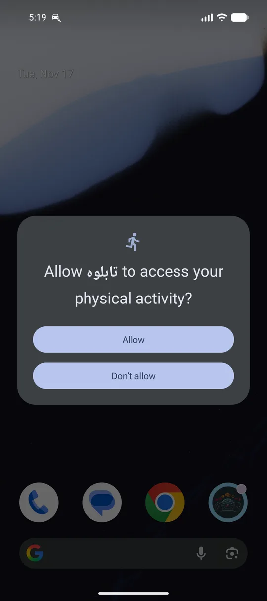
3. طلب «النشاط البدني» من أندرويد
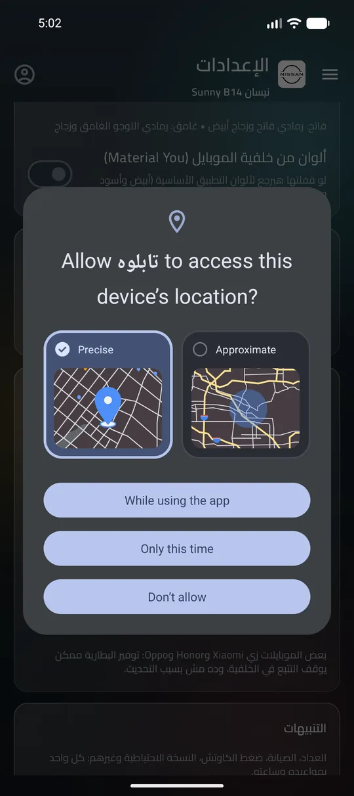
3. طلب الموقع من أندرويد
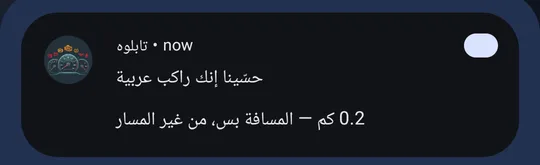
4. وانت راكب: المسافة بس، من غير المسار5. في آخر الرحلة
اكتشاف ببلوتوث العربية (الأجهزة القريبة + الموقع طول الوقت)
الرحلة بتبدأ أول ما الموبايل يتوصل ببلوتوث عربيتك وبتخلص لما يتفصل. قبل الطلب، رسالة «تسجيل الرحلات أوتوماتيك» بتشرح ليه، وبعد «موافق» بتختار بلوتوث العربية من القايمة. لو فعّلت الطريقتين، بتتسجل رحلة واحدة بس: البلوتوث بيكمّل الرحلة اللي الحركة بدأتها.
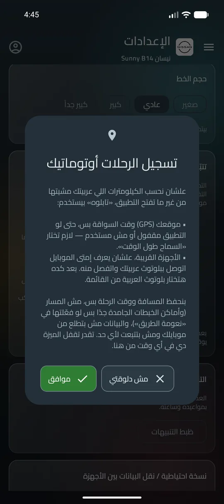
الشرح قبل طلب البلوتوث والموقع
تقفلها إزاي
شيل العلامة من «تتبّع الحركة» أو «اكتشاف ببلوتوث العربية» في الإعدادات، أو اسحب الصلاحية من إعدادات الموبايل ← التطبيقات ← تابلوه ← الأذونات. لو سحبت صلاحية، التطبيق بيعرض الطريقة دي مقفولة لحد ما ترجّعها.
Tabloh keeps track of a car's service schedule: it works out when each part is due from the car's odometer and the date it was last changed. To keep the odometer right without typing it every day, the app can measure your trips' distance by itself. This is optional: each permission is asked only when you turn on the feature that needs it, and only after a screen that explains why.
No health data. The physical activity permission only tells the app when the phone gets into a vehicle and when it leaves it. We don't read steps, fitness or any body data, and nothing from it is stored or leaves your phone.
All permissions
Permission
Asked when
What it's used for
Location (GPS), all the time ACCESS_FINE_LOCATIONACCESS_BACKGROUND_LOCATION
When you turn on “Motion tracking” or “Detect with the car's Bluetooth”
Measuring a trip's distance while driving only, even with the app closed. We keep the distance and time, not the route. The Emergency page reads your location only when you ask for it.
Physical activity ACTIVITY_RECOGNITION
When you turn on “Motion tracking”
Knowing when the phone gets into a moving vehicle (the trip starts) and when it leaves it (the trip ends). For cars without Bluetooth, or if you'd rather not use it.
Nearby devices (Bluetooth) BLUETOOTH_CONNECT
When you turn on “Detect with the car's Bluetooth”
Knowing when the phone connects to and disconnects from your car's Bluetooth, to start and end the trip.
Foreground service (location) FOREGROUND_SERVICE_LOCATION
During a trip only
Measuring the trip while it's under way, with a notification shown the whole time.
Notifications POST_NOTIFICATIONS
First launch
Odometer, service and renewal reminders, and the trip notification. Each reminder can be turned off or moved in Notifications.
Run after restart RECEIVE_BOOT_COMPLETED
Not asked
Bringing back reminders and trip tracking after the phone restarts.
Internet
Not asked
Google sign-in and the optional server backup, and offers.
Motion tracking (physical activity + location all the time)
Settings → “Trip tracking” → “Motion tracking”.
Before any request, a screen explains why physical activity and location are used. Only “OK” goes on.
Android asks for physical activity and location, then “Allow all the time”.
While riding: a “Counting your trip” notification with the distance only, and an “End trip” button to end it yourself.
At the end: “My car or a ride?”. “A ride” removes the trip completely.
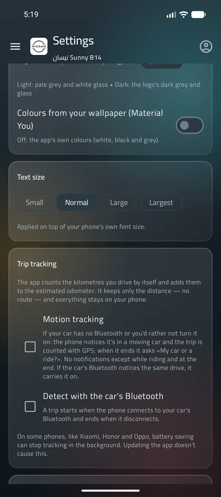
1. Settings → Trip tracking
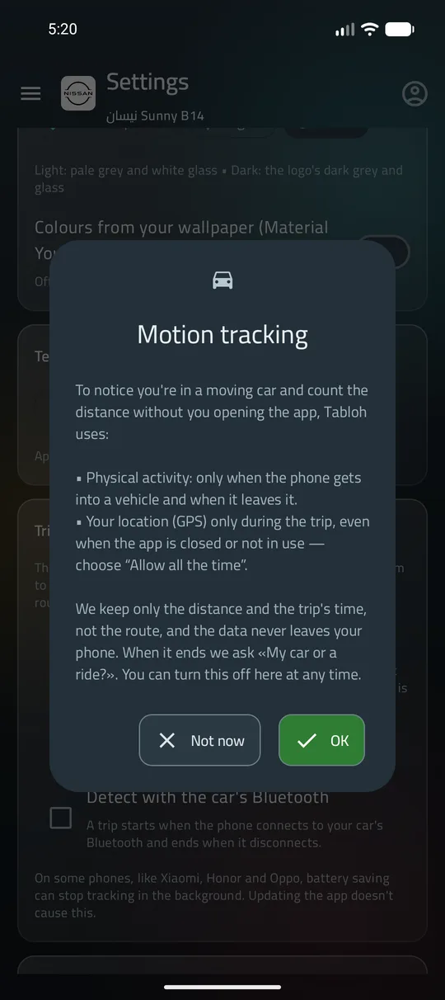
2. The explanation, before any request3. Android's physical activity request3. Android's location request
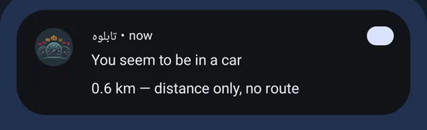
4. While riding: distance only, no route
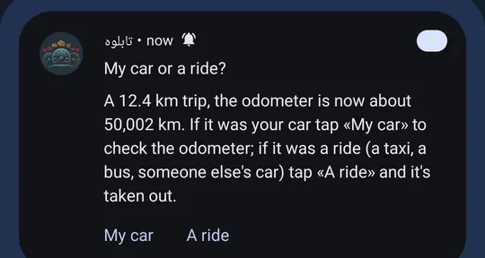
5. At the end of the trip
Detect with the car's Bluetooth (nearby devices + location all the time)
A trip starts when the phone connects to your car's Bluetooth and ends when it disconnects. Before the request, an “Automatic trips” screen explains why; after “OK” you pick the car's Bluetooth from the list. With both ways on, only one trip is recorded: Bluetooth carries on the trip motion started.
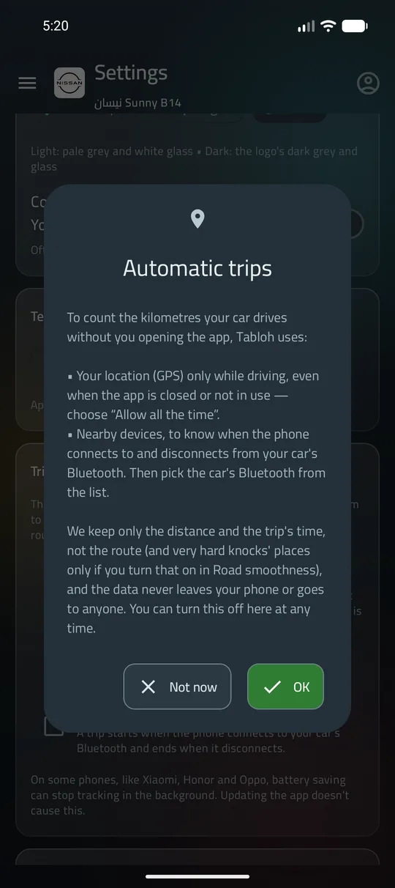
The explanation before the Bluetooth and location requests
Turning it off
Untick “Motion tracking” or “Detect with the car's Bluetooth” in Settings, or take the permission back in the phone's Settings → Apps → Tabloh → Permissions. When a permission is taken back, the app shows that way as off until it's allowed again.